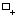
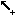

(2013-01-21)
Editing the regulatory graph
Regulatory graphs can be interactively modified: components and interactions can be added, edited and removed. The interaction with the graph view is controled by an editing mode selected through the following buttons available on the toolbar on the top:
Available editing modes for regulatory graphs | |
 |
Default editing mode: allows to select and move objects. |
 |
Component insertion mode: when selected, clicking on the graph panel adds a new component. |
|
   |
Interaction insertion mode: when selected, interactions are added by first selecting one component and dragging the selection to (the same or) another component. The interactions must be complemented by the definition of the logical parameters for the target variable (see below). The four buttons allow to add different types of interactions: activation, inhibition, dual or undefined. |
 |
Deletion option: selected items (components or interactions) are deleted. |
The terms component and interaction are used throughout this document, but some other terms are sometimes used in their place. Regulatory components (also called nodes) can be of different types. They often denote genes but also proteins, or yet global cellular characteristics such as cell mass. Similarly, interactions denote transcriptional regulations but can also denote protein phosphorylation, degradation, complex formation, ...
Component order
In GINsim, components are internally ordered. This order has no effect on the regulatory graph itself, but it has a direct effect on the internal representation of the logical parameters, with possible effects on (partial) simulation. The default order follows the node addition chronology, which can be modified by selecting a (set of) node(s) and using the Up/Down arrows on the left side of the Modelling Attributes tab. This change of order will have an effect throughout GINsim, e.g. in the state transition graph, since the same order is used in the states names.

The selection of several components, can be achieved (like in all lists) by using the Ctrl key (apple/Cmd key on Mac OS X) or Shift key, while selecting the nodes.
Component attributes
When a single component is selected, the Modelling Attributes tab allows to define its properties:
Id: component's identifier. It appears in the graph and it must be unique.
Name: component's long name (optional).
Input: mark a component as an input node, i.e., cannot have regulators.
Max: the maximal expression level of the component. The default value is 1 (Boolean case). It can be augmented to generate multi-valued components.
Logical parameters: define the rules controlling the dynamical evolution of the expression level depending on the active incoming interactions.
Attributes of a component

The Modelling Attributes tab is divided into three parts. The combobox selection list (bottom left) permits to select Annotations, Parameters and Formulae.
Interactions
When a single interaction arc is selected, the Modelling Attributes tab allows to define its properties.
Depending on a component's activity level, different effects might occur on another component. These different effects are controled by the definition of different ranges listed on the left.
The "+" button creates an additional interaction range.
The "-" button deletes the selected interaction range.
-
Properties of the selected interaction range can be defined:
Threshold defines the lower bound of the selected interaction range. The interaction becomes active when the activity level of its source component is in this range.
Sign: each interaction range can be labelled with activation, inhibition, dual or unknown. However, this is only a visual hint, as the real effects of interactions are defined through logical parameters.
Model integrity
GINsim keeps the definition of regulatory graphs consistent, which means that:
When an interaction is deleted, all logical parameters in which it was involved are also deleted.
When the max value of a node is decreased, interactions and logical parameters are checked and, if necessary, updated accordingly and silently to avoid inconsistencies.
Since such changes have automatic repercussions on the model parameters and interaction ranges to keep the model valid, keep in mind that you need to double-check parameters after performing such changes.
Checking activation intervals of interactions and the correctness of logical parameters is left to the user as adding more controls generates more annoyances than real help. Invalid logical parameters are highlighted to ease their detection. Keep in mind that a change in the activation-range of one of the interactions can turn a valid logical parameter into an ill-defined one. Parameters involving interactions from the same source with disjoint activity ranges are also ill-defined and thus highlighted for correction.